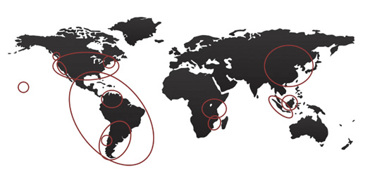

Where We Work

The Natural Capital Project is working in projects around the world to scientifically test and improve our approach and tools and to demonstrate how they can be used to incorporate ecosystem services into natural resource decisions. Since our founding in 2006, we have worked on more than 20 major projects worldwide—informing decisions ranging from the designation of ecosystem function conservation areas in China, to coastal protection in the Gulf of Mexico, to marine spatial planning in Canada and Belize. Currently, our major demonstration sites include:
Current Projects:
Partner Projects:
Selected Completed Projects:
These sites were selected based on the following criteria:
Significant Biodiversity. Richness, uniqueness, and/or representation.
Critical Ecosystem Services. Clearly identified ecosystem services that are central to human well-being.
High Threat level. Potential high rates of change, especially degradation.
High Leverage Potential. Potential to influence important and imminent policy decisions and expand lessons regionally, nationally, or beyond.
Stakeholder Will. Decision-makers with ability and interest to implement service protection systems.
Capacity. Scientific and management capacity, leadership and convening power, present in one or more of the partners.
Learning. Opportunities high for rapid advancement across all Natural Capital Project efforts.